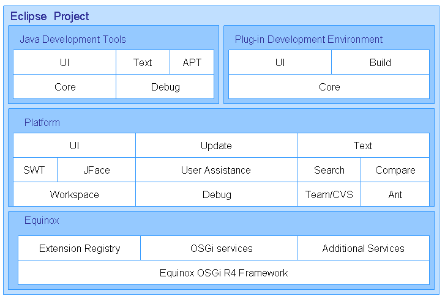
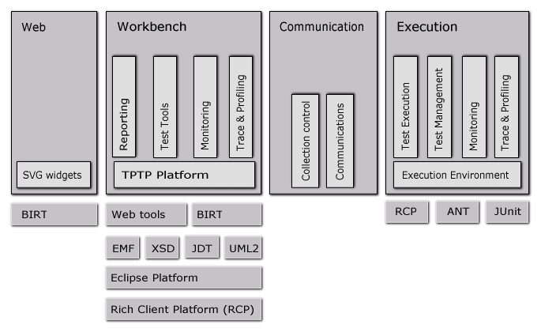
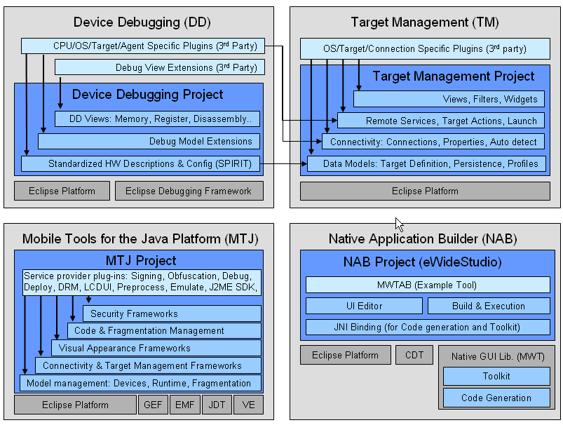

the open community driving the eclipse platform

| Eclipse Architecture Plan the open community driving the eclipse platform |
|
The
 Eclipse Development Process calls for the creation of three Councils: Requirements, Planning and Architecture. Together, these Councils are responsible for the creation and maintenance of the Eclipse Roadmap. When approved by the Board, the intent of the Eclipse Roadmap is to communicate the directions in which the Eclipse community will be taking its projects over the next year. New projects started during the life of a Roadmap are expected to be consistent and complementary to the Roadmap.
Eclipse Development Process calls for the creation of three Councils: Requirements, Planning and Architecture. Together, these Councils are responsible for the creation and maintenance of the Eclipse Roadmap. When approved by the Board, the intent of the Eclipse Roadmap is to communicate the directions in which the Eclipse community will be taking its projects over the next year. New projects started during the life of a Roadmap are expected to be consistent and complementary to the Roadmap.
This document is year two of the Eclipse Architecture Plan. We welcome your feedback on the Eclipse Foundation Newsgroup.
The Eclipse community is currently organized into nine top-level projects, the architecture of each is described below. Most top-level projects have additional architecture information on their project websites.
| Overall Architecture |
The overall architecture of the Eclipse projects is driven by the elegant plug-in mechanism of the underlying Eclipse Platform. Each project contributes a variety of plug-ins that extend the basic functions of the platform and tailor it into a useful environment for that project's users: both API users and GUI users. A key feature of the Eclipse architecture is that each plug-in not only extends its pre-requisites but also contributes additional extension points for other plug-ins. In this way, each Eclipse project provides an extensible framework for the Eclipse ecosystem to build upon, to use, and to commercialize.

The Eclipse community plans to have a Callisto Simultaneous Release in June 2006, whose goal is to release ten major Eclipse projects at the same time (BIRT, CDT, DTP, EMF, GEF, GMF, Platform, TPTP, WTP, VE). We are doing this simultaneous release to support the needs of the ecosystem members who integrate Eclipse frameworks into their own software and products. The architectural support for this includes (1) adopting ICU4J as the standard international support, (2) using the "capability" feature of the Eclipse platform to coordinate contributions to/avoid conflicts in the menus and tool bars, and (3) to use an Eclipse update manager site for unified distribution.
| Eclipse Platform Top-Level Project |

| Tools Top-Level Project |
 Tools project home page. The Tools top-level project is somewhat unique
in that it is composed of six independent sub-projects.
Tools project home page. The Tools top-level project is somewhat unique
in that it is composed of six independent sub-projects.
| Web Tools Top-Level Project |

| Test & Performance Tools Platform Top-Level Project |
 Test & Performance Tools Platform project home page.
Test & Performance Tools Platform project home page.

| Business Intelligence and Reporting Tools Top-Level Project |
 Business Intelligence and Reporting Tools project home page.
Business Intelligence and Reporting Tools project home page.

| Data Tools Top-Level Project |
| Device Software Development Platform Top-Level Project |
 Device Software Development Platform project home page.
Device Software Development Platform project home page.

| SOA Tools Top-Level Project |
 SOA Tools project home page. The SOA Tools Project is a brand-new
project as of the writing of this Roadmap and has not yet formulated an
architecture.
SOA Tools project home page. The SOA Tools Project is a brand-new
project as of the writing of this Roadmap and has not yet formulated an
architecture.
| Modeling Top-Level Project |
The Modeling top-level project is currently in the proposal phase, but is expected to be approved in the near future. The model top-level project will have the following architecture:

February 22, 2006